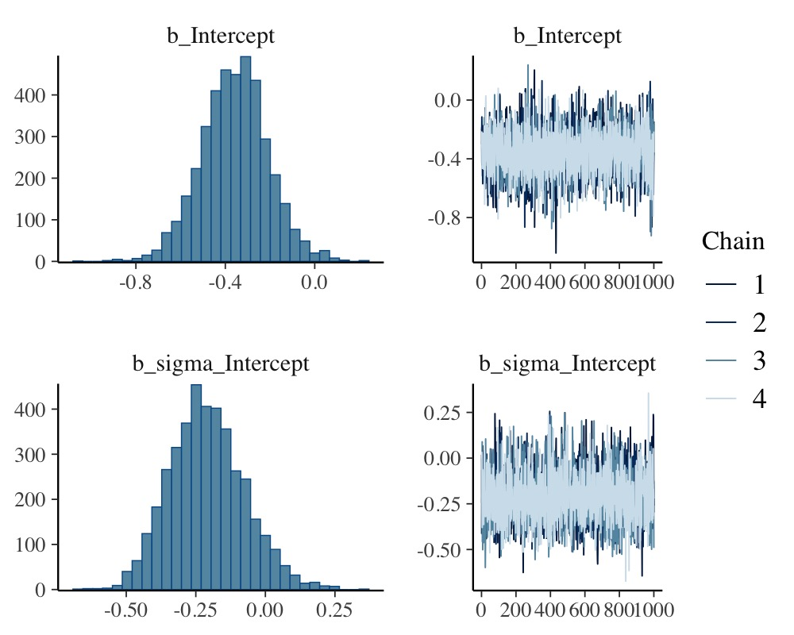
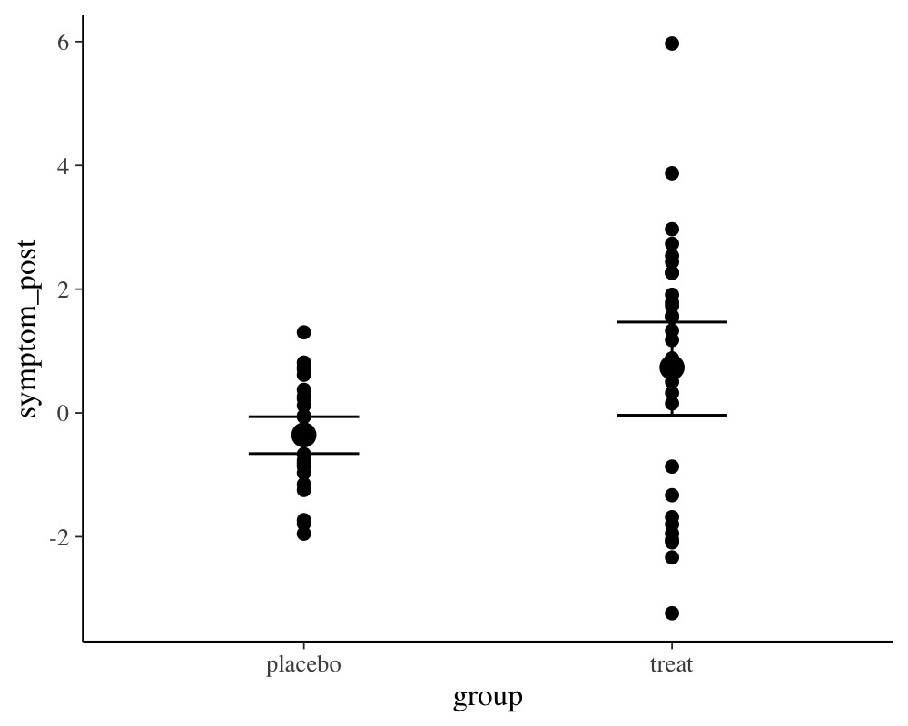
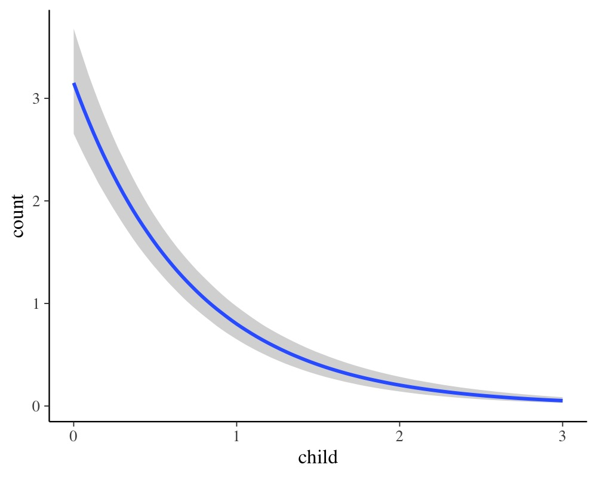
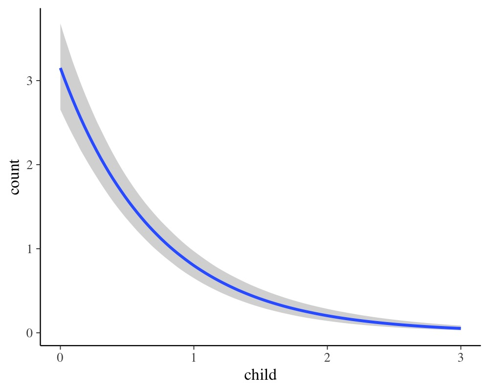
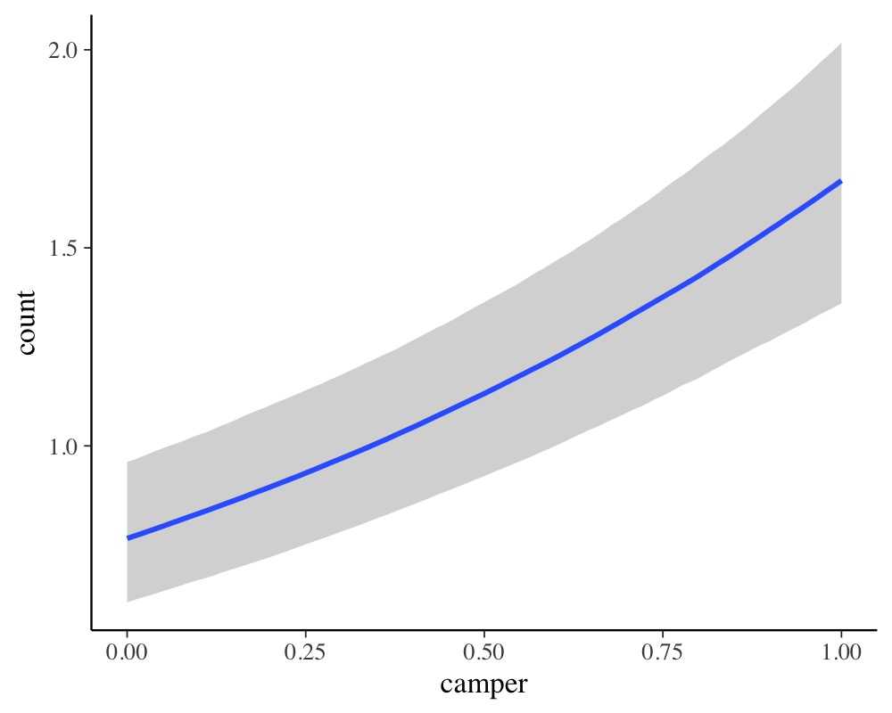
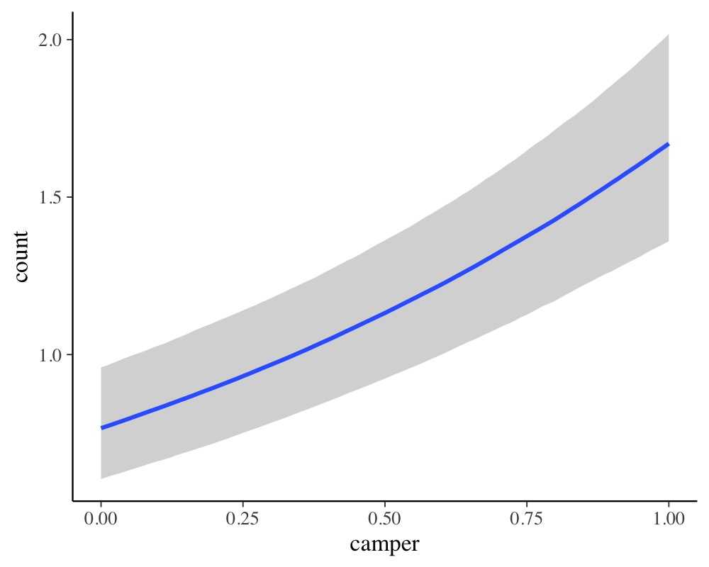
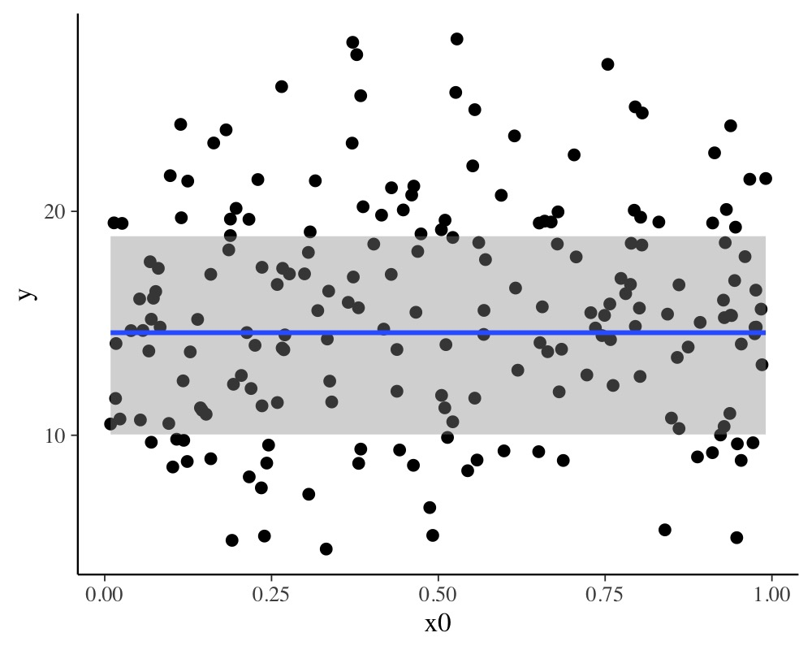
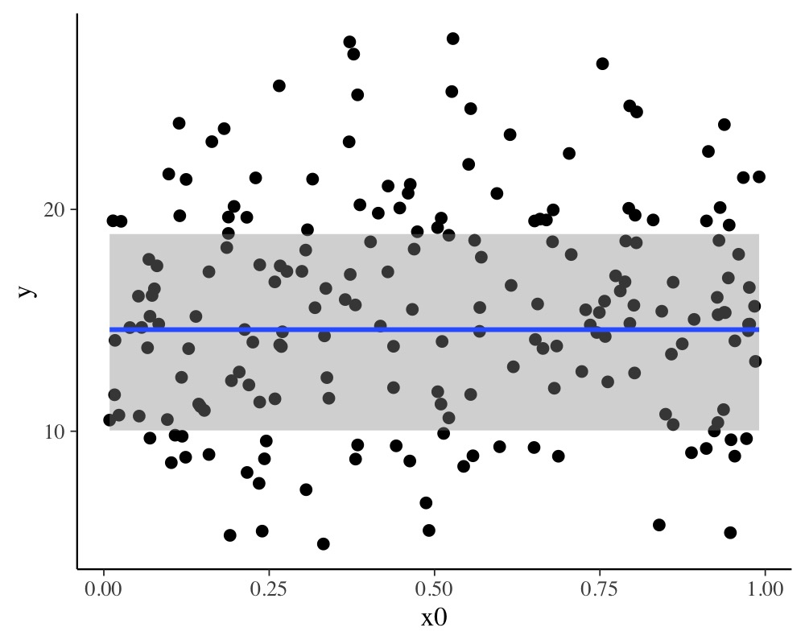

Estimating Distributional Models with brms
Paul Bürkner
2020-05-27
Source:vignettes/brms_distreg.Rmd
brms_distreg.RmdIntroduction
This vignette provides an introduction on how to fit distributional regression models with brms. We use the term distributional model to refer to a model, in which we can specify predictor terms for all parameters of the assumed response distribution. In the vast majority of regression model implementations, only the location parameter (usually the mean) of the response distribution depends on the predictors and corresponding regression parameters. Other parameters (e.g., scale or shape parameters) are estimated as auxilliary parameters assuming them to be constant across observations. This assumption is so common that most researchers applying regression models are often (in my experience) not aware of the possibility of relaxing it. This is understandable insofar as relaxing this assumption drastically increase model complexity and thus makes models hard to fit. Fortunately, brms uses Stan on the backend, which is an incredibly flexible and powerful tool for estimating Bayesian models so that model complexity is much less of an issue.
Suppose we have a normally distributed response variable. Then, in basic linear regression, we specify a predictor term \(\eta_{\mu}\) for the mean parameter \(\mu\) of the normal distribution. The second parameter of the normal distribution – the residual standard deviation \(\sigma\) – is assumed to be constant across observations. We estimate \(\sigma\) but do not try to predict it. In a distributional model, however, we do exactly this by specifying a predictor term \(\eta_{\sigma}\) for \(\sigma\) in addition to the predictor term \(\eta_{\mu}\). Ignoring group-level effects for the moment, the linear predictor of a parameter \(\theta\) for observation \(n\) has the form
\[\eta_{\theta n} = \sum_{i = 1}^{K_{\theta}} b_{\theta i} x_{\theta i n}\] where \(x_{\theta i n}\) denotes the value of the \(i\)th predictor of parameter \(\theta\) for observation \(n\) and \(b_{\theta i}\) is the \(i\)th regression coefficient of parameter \(\theta\). A distributional normal model with response variable \(y\) can then be written as
\[y_n \sim \mathcal{N}\left(\eta_{\mu n}, \, \exp(\eta_{\sigma n}) \right)\] We used the exponential function around \(\eta_{\sigma}\) to reflect that \(\sigma\) constitutes a standard deviation and thus only takes on positive values, while a linear predictor can be any real number.
A simple distributional model
Unequal variance models are possibly the most simple, but nevertheless very important application of distributional models. Suppose we have two groups of patients: One group recieves a treatment (e.g., an antidepressive drug) and another group recieves placebo. Since the treatment may not work equally well for all patients, the symptom variance of the treatment group may be larger than the symptom variance of the placebo group after some weeks of treatment. For simplicity, assume that we only investigate the post-treatment values.
group <- rep(c("treat", "placebo"), each = 30) symptom_post <- c(rnorm(30, mean = 1, sd = 2), rnorm(30, mean = 0, sd = 1)) dat1 <- data.frame(group, symptom_post) head(dat1)
group symptom_post
1 treat 1.3014389
2 treat -0.6725327
3 treat 0.9362149
4 treat -0.8911369
5 treat -1.2897571
6 treat -1.8692508The following model estimates the effect of group on both the mean and the residual standard deviation of the normal response distribution.
Useful summary statistics and plots can be obtained via

plot(conditional_effects(fit1), points = TRUE)

The population-level effect sigma_grouptreat, which is the contrast of the two residual standard deviations on the log-scale, reveals that the variances of both groups are indeed different. This impression is confirmed when looking at the conditional_effects of group. Going one step further, we can compute the residual standard deviations on the original scale using the hypothesis method.
hyp <- c("exp(sigma_Intercept) = 0", "exp(sigma_Intercept + sigma_grouptreat) = 0") hypothesis(fit1, hyp)
Hypothesis Tests for class b:
Hypothesis Estimate Est.Error CI.Lower CI.Upper Evid.Ratio Post.Prob Star
1 (exp(sigma_Interc... = 0 1.02 0.14 0.79 1.33 NA NA *
2 (exp(sigma_Interc... = 0 1.81 0.25 1.41 2.38 NA NA *
---
'CI': 90%-CI for one-sided and 95%-CI for two-sided hypotheses.
'*': For one-sided hypotheses, the posterior probability exceeds 95%;
for two-sided hypotheses, the value tested against lies outside the 95%-CI.
Posterior probabilities of point hypotheses assume equal prior probabilities.We may also directly compare them and plot the posterior distribution of their difference.
hyp <- "exp(sigma_Intercept + sigma_grouptreat) > exp(sigma_Intercept)" (hyp <- hypothesis(fit1, hyp))
Hypothesis Tests for class b:
Hypothesis Estimate Est.Error CI.Lower CI.Upper Evid.Ratio Post.Prob Star
1 (exp(sigma_Interc... > 0 0.79 0.29 0.35 1.29 1999 1 *
---
'CI': 90%-CI for one-sided and 95%-CI for two-sided hypotheses.
'*': For one-sided hypotheses, the posterior probability exceeds 95%;
for two-sided hypotheses, the value tested against lies outside the 95%-CI.
Posterior probabilities of point hypotheses assume equal prior probabilities.plot(hyp, chars = NULL)

Indeed, the residual standard deviation of the treatment group seems to larger than that of the placebo group. Moreover the magnitude of this difference is pretty similar to what we expected due to the values we put into the data simulations.
Zero-Inflated Models
Another important application of the distributional regression framework are so called zero-inflated models. These models are helpful whenever there are more zeros in the response variable than one would naturally expect. For example, if one seeks to predict the number of cigarettes people smoke per day and also includes non-smokers, there will be a huge amount of zeros which, when not modeled appropriately, can seriously distort parameter estimates. Here, we consider an example dealing with the number of fish caught by various groups of people. On the UCLA website (), the data are described as follows: “The state wildlife biologists want to model how many fish are being caught by fishermen at a state park. Visitors are asked how long they stayed, how many people were in the group, were there children in the group and how many fish were caught. Some visitors do not fish, but there is no data on whether a person fished or not. Some visitors who did fish did not catch any fish so there are excess zeros in the data because of the people that did not fish.”
nofish livebait camper persons child xb zg count
1 1 0 0 1 0 -0.8963146 3.0504048 0
2 0 1 1 1 0 -0.5583450 1.7461489 0
3 0 1 0 1 0 -0.4017310 0.2799389 0
4 0 1 1 2 1 -0.9562981 -0.6015257 0
5 0 1 0 1 0 0.4368910 0.5277091 1
6 0 1 1 4 2 1.3944855 -0.7075348 0As predictors we choose the number of people per group, the number of children, as well as whether the group consists of campers. Many groups may not even try catching any fish at all (thus leading to many zero responses) and so we fit a zero-inflated Poisson model to the data. For now, we assume a constant zero-inflation probability across observations.
fit_zinb1 <- brm(count ~ persons + child + camper, data = zinb, family = zero_inflated_poisson())
Again, we summarize the results using the usual methods.
summary(fit_zinb1)
Family: zero_inflated_poisson
Links: mu = log; zi = identity
Formula: count ~ persons + child + camper
Data: zinb (Number of observations: 250)
Samples: 4 chains, each with iter = 2000; warmup = 1000; thin = 1;
total post-warmup samples = 4000
Population-Level Effects:
Estimate Est.Error l-95% CI u-95% CI Rhat Bulk_ESS Tail_ESS
Intercept -1.01 0.17 -1.35 -0.68 1.00 2549 2724
persons 0.87 0.04 0.79 0.96 1.00 2803 2696
child -1.37 0.09 -1.55 -1.19 1.00 2256 2305
camper 0.80 0.09 0.62 0.98 1.00 2922 2304
Family Specific Parameters:
Estimate Est.Error l-95% CI u-95% CI Rhat Bulk_ESS Tail_ESS
zi 0.41 0.04 0.32 0.49 1.00 2940 2683
Samples were drawn using sampling(NUTS). For each parameter, Bulk_ESS
and Tail_ESS are effective sample size measures, and Rhat is the potential
scale reduction factor on split chains (at convergence, Rhat = 1).plot(conditional_effects(fit_zinb1), ask = FALSE)
 

According to the parameter estimates, larger groups catch more fish, campers catch more fish than non-campers, and groups with more children catch less fish. The zero-inflation probability zi is pretty large with a mean of 41%. Please note that the probability of catching no fish is actually higher than 41%, but parts of this probability are already modeled by the poisson distribution itself (hence the name zero-inflation). If you want to treat all zeros as origniating from a separate process, you can use hurdle models instead (not shown here).
Now, we try to additionally predict the zero-inflation probability by the number of children. The underlying reasoning is that we expect groups with more children to not even try catching fish. Most children are just terribly bad at waiting for hours until something happens. From a purely statistical perspective, zero-inflated (and hurdle) distributions are a mixture of two processes and predicting both parts of the model is natural and often very reasonable to make full use of the data.
fit_zinb2 <- brm(bf(count ~ persons + child + camper, zi ~ child), data = zinb, family = zero_inflated_poisson())
summary(fit_zinb2)
Family: zero_inflated_poisson
Links: mu = log; zi = logit
Formula: count ~ persons + child + camper
zi ~ child
Data: zinb (Number of observations: 250)
Samples: 4 chains, each with iter = 2000; warmup = 1000; thin = 1;
total post-warmup samples = 4000
Population-Level Effects:
Estimate Est.Error l-95% CI u-95% CI Rhat Bulk_ESS Tail_ESS
Intercept -1.08 0.18 -1.43 -0.73 1.00 3171 2757
zi_Intercept -0.96 0.26 -1.51 -0.49 1.00 3541 2890
persons 0.89 0.05 0.80 0.98 1.00 3222 2833
child -1.18 0.10 -1.37 -0.99 1.00 2964 2849
camper 0.78 0.10 0.60 0.97 1.00 3631 2535
zi_child 1.22 0.27 0.72 1.78 1.00 3869 2966
Samples were drawn using sampling(NUTS). For each parameter, Bulk_ESS
and Tail_ESS are effective sample size measures, and Rhat is the potential
scale reduction factor on split chains (at convergence, Rhat = 1).plot(conditional_effects(fit_zinb2), ask = FALSE)

 

To transform the linear predictor of zi into a probability, brms applies the logit-link:
\[logit(zi) = \log\left(\frac{zi}{1-zi}\right) = \eta_{zi}\]
The logit-link takes values within \([0, 1]\) and returns values on the real line. Thus, it allows the transition between probabilities and linear predictors.
According to the model, trying to fish with children not only decreases the overall number fish caught (as implied by the Poisson part of the model) but also drastically increases your change of catching no fish at all (as implied by the zero-inflation part) most likely because groups with more children are not even trying.
Additive Distributional Models
In the examples so far, we did not have multilevel data and thus did not fully use the capabilities of the distributional regression framework of brms. In the example presented below, we will not only show how to deal with multilevel data in distributional models, but also how to incorporate smooth terms (i.e., splines) into the model. In many applications, we have no or only a very vague idea how the relationship between a predictor and the response looks like. A very flexible approach to tackle this problems is to use splines and let them figure out the form of the relationship. For illustration purposes, we simulate some data with the mgcv package, which is also used in brms to prepare smooth terms.
dat_smooth <- mgcv::gamSim(eg = 6, n = 200, scale = 2, verbose = FALSE)
Gu & Wahba 4 term additive modelhead(dat_smooth[, 1:6])
y x0 x1 x2 x3 f
1 9.422021 0.88690638 0.8634812 0.9258754 0.64486403 9.333498
2 14.635828 0.88493626 0.2451035 0.1373701 0.29831033 14.254556
3 19.059093 0.03308747 0.8920998 0.9836495 0.76792744 15.162335
4 15.065863 0.10555348 0.8391403 0.7662203 0.58737521 19.754517
5 7.351410 0.23236547 0.3408595 0.5694916 0.09202622 9.316752
6 19.990943 0.20350764 0.2186804 0.1722999 0.37717261 16.461628The data contains the predictors x0 to x3 as well as the grouping factor fac indicating the nested structure of the data. We predict the response variable y using smooth terms of x1 and x2 and a varying intercept of fac. In addition, we assume the residual standard deviation sigma to vary by a smoothing term of x0 and a varying intercept of fac.
fit_smooth1 <- brm( bf(y ~ s(x1) + s(x2) + (1|fac), sigma ~ s(x0) + (1|fac)), data = dat_smooth, family = gaussian(), chains = 2, control = list(adapt_delta = 0.95) )
summary(fit_smooth1)
Family: gaussian
Links: mu = identity; sigma = log
Formula: y ~ s(x1) + s(x2) + (1 | fac)
sigma ~ s(x0) + (1 | fac)
Data: dat_smooth (Number of observations: 200)
Samples: 2 chains, each with iter = 2000; warmup = 1000; thin = 1;
total post-warmup samples = 2000
Smooth Terms:
Estimate Est.Error l-95% CI u-95% CI Rhat Bulk_ESS Tail_ESS
sds(sx1_1) 2.27 1.88 0.12 6.94 1.00 769 1157
sds(sx2_1) 22.47 6.24 13.45 38.01 1.00 785 1317
sds(sigma_sx0_1) 0.65 0.82 0.02 2.89 1.00 746 927
Group-Level Effects:
~fac (Number of levels: 4)
Estimate Est.Error l-95% CI u-95% CI Rhat Bulk_ESS Tail_ESS
sd(Intercept) 5.05 2.30 2.27 11.12 1.00 1014 1004
sd(sigma_Intercept) 0.10 0.12 0.00 0.42 1.00 707 771
Population-Level Effects:
Estimate Est.Error l-95% CI u-95% CI Rhat Bulk_ESS Tail_ESS
Intercept 15.00 2.30 10.17 19.50 1.00 1013 1058
sigma_Intercept 0.74 0.09 0.57 0.92 1.00 1191 832
sx1_1 12.28 4.95 3.28 23.74 1.00 1466 1241
sx2_1 67.41 15.99 34.47 99.63 1.00 1880 1380
sigma_sx0_1 -0.91 1.58 -4.04 2.48 1.00 861 805
Samples were drawn using sampling(NUTS). For each parameter, Bulk_ESS
and Tail_ESS are effective sample size measures, and Rhat is the potential
scale reduction factor on split chains (at convergence, Rhat = 1).plot(conditional_effects(fit_smooth1), points = TRUE, ask = FALSE)

 

This model is likely an overkill for the data at hand, but nicely demonstrates the ease with which one can specify complex models with brms and to fit them using Stan on the backend.